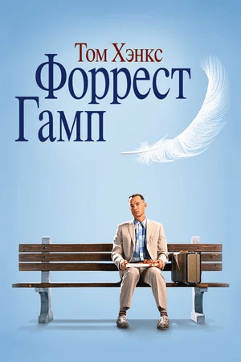
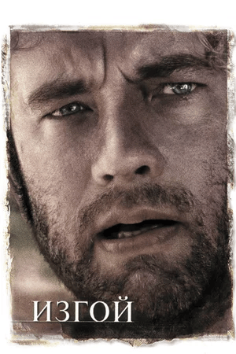

Сидя на автобусной остановке, Форрест Гамп — не очень умный, но добрый и открытый парень — рассказывает случайным встречным историю своей необыкновенной жизни. С самого малолетства парень страдал от заболевания ног, соседские мальчишки дразнили его, но в один прекрасный день Форрест открыл в себе невероятные способности к бегу. Подруга детства Дженни всегда его поддерживала и защищала, но вскоре дороги их разошлись.
Подробнее на КинопоискВторая мировая. Капитан Джон Миллер получает тяжелое задание. Вместе с отрядом из восьми человек он должен отправиться в тыл врага на поиски рядового Джеймса Райана, три родных брата которого почти одновременно погибли на полях сражений. Командование приняло решение демобилизовать Райана и отправить его на родину к безутешной матери. Но чтобы найти и спасти солдата, крошечному отряду придется пройти через все круги ада.
Подробнее на Кинопоиск
Инспектор логистической компании FedEx Чак Ноланд — трудоголик, у которого нет времени даже на собственную невесту. Во время очередной командировки самолет с Ноландом падает в Тихий океан. Чак, единственный, кому посчастливилось спастись, оказывается на необитаемом острове, где ему придется бороться за выживание. Человек, оказавшийся на необитаемом острове после крушения, пытается выжить. ㅤㅤㅤㅤㅤㅤㅤㅤㅤㅤㅤㅤㅤ
Подробнее на Кинопоиск
Дата рождения: 9 июля 1956 года
Место рождения: Конкорд, Калифорния, США
Образование: Поступил на актерский факультет Калифорнийского университета, однако оставил учебу, как только получил предложение войти в состав небольшой актерской труппы, выступавшей в Кливленде.
Личная жизнь: Женат на Рите Уилсон, у них двое детей.